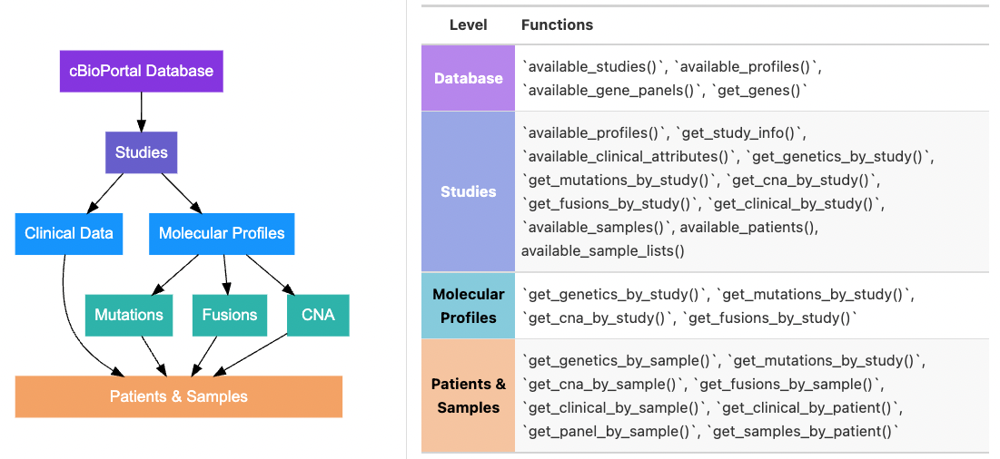

{cbioportalR} allows you to access cBioPortal’s genomic and clinical data sets directly through R. The package wraps cBioPortal’s API endpoints so R users can easily leverage the existing API to access genomic data on mutations, copy number alterations and fusions as well as data on tumor mutational burden (TMB), microsatellite instability status (MSI) and select clinical data points (depending on the study).
This package was created to work with both the public cBioPortal website, as well as private institutional cBioPortal instances (e.g. MSKCC, GENIE) with appropriate credentials and authentication.
For more information on cBioPortal, see the following publications:
For full documentation on the cBioPortal API, please see the following links:
Note: If you are a MSK researcher working on IMPACT data, you should connect to MSK’s cBioPortal instance to get the most up to date IMPACT data, and you must follow the MSK-IMPACT publication guidelines when using this data
Installation
You can install {cbioportalR} with:
remotes::install_github("karissawhiting/cbioportalR")Authentication
If you are using the public domain https://www.cbioportal.org/, you don’t need a token to start pulling data. If you are using a private instance of cBioPortal (like MSKCC’s institutional database), you will need to acquire a token and save it to your .Renviron file (or wherever you store credentials). Simply log in to your institution’s cBioPortal site, acquire a token (Usually through the ‘Web API’ tab) and save it in your .Renviron file. This will save the token as an environmental variable so you don’t have to hard code the secret key in your scripts.
Tip: The following {usethis} function can easily find and open the .Renviron for you:
usethis::edit_r_environ()Paste the token you were given (using the format below) in the .Renviron file and save the file changes. After saving you should restart your R session to ensure the token is saved and recognized.
CBIOPORTAL_TOKEN= 'YOUR_TOKEN'You can test that your token was saved using:
For every new R session, you need to set your database URL. The set_cbioportal_db() function will set an environmental variable for your session that tells the package which database to point to for all API calls. You can set it to point to the public database with db = 'www.cbioportal.org' or db = 'public'. If using a private database you will pass your institutions cBioPortal URL as db. This function will both set your URL and check the connection.
set_cbioportal_db(db = "public")
#> ✔ You are successfully connected!
#> ✔ base_url for this R session is now set to "www.cbioportal.org/api"You are now set up for the remainder of your session! API calls depend on your internet connection and possibly a VPN connection so you can use the following to check your connection at any time throughout your session:
test_cbioportal_db()
#> ✔ You are successfully connected!cBioPortal Data Model
There are many ways to identify and pull data (e.g. by study ID, by sample ID, by molecular profile ID). Having an understanding of how data is organized in cBioPortal will help you determine which functions you need. The figure below outlines the general data schema for cBioPortal and which functions access which levels of the schema:

Examples
To see available studies in your database you can use:
available_studies() %>%
head(n = 10)
#> # A tibble: 10 × 13
#> studyId name description publicStudy groups status importDate allSampleCount
#> <chr> <chr> <chr> <lgl> <chr> <int> <chr> <int>
#> 1 acc_tc… Adre… "TCGA Adre… TRUE "PUBL… 0 2022-03-0… 92
#> 2 blca_p… Blad… "Whole exo… TRUE "" 0 2022-03-0… 34
#> 3 bcc_un… Basa… "Whole-exo… TRUE "PUBL… 0 2022-03-0… 293
#> 4 all_st… Acut… "Comprehen… TRUE "PUBL… 0 2022-03-0… 93
#> 5 ampca_… Ampu… "Exome seq… TRUE "PUBL… 0 2022-03-0… 160
#> 6 blca_d… Blad… "Whole exo… TRUE "PUBL… 0 2022-03-0… 50
#> 7 blca_m… Blad… "Comprehen… TRUE "PUBL… 0 2022-03-0… 97
#> 8 blca_b… Blad… "Whole-exo… TRUE "PUBL… 0 2022-03-0… 99
#> 9 blca_m… Blad… "Genomic P… TRUE "PUBL… 0 2022-03-0… 109
#> 10 all_st… Hypo… "Whole gen… TRUE "" 0 2022-03-0… 44
#> # … with 5 more variables: readPermission <lgl>, cancerTypeId <chr>,
#> # referenceGenome <chr>, pmid <chr>, citation <chr>To view study metadata on a particular study you can use:
get_study_info("acc_tcga") %>%
t()
#> [,1]
#> name "Adrenocortical Carcinoma (TCGA, Firehose Legacy)"
#> description "TCGA Adrenocortical Carcinoma. Source data from <A HREF=\"http://gdac.broadinstitute.org/runs/stddata__2016_01_28/data/ACC/20160128/\">GDAC Firehose</A>. Previously known as TCGA Provisional."
#> publicStudy "TRUE"
#> groups "PUBLIC"
#> status "0"
#> importDate "2022-03-04 17:47:56"
#> allSampleCount "92"
#> sequencedSampleCount "90"
#> cnaSampleCount "90"
#> mrnaRnaSeqSampleCount "0"
#> mrnaRnaSeqV2SampleCount "79"
#> mrnaMicroarraySampleCount "0"
#> miRnaSampleCount "0"
#> methylationHm27SampleCount "0"
#> rppaSampleCount "46"
#> massSpectrometrySampleCount "0"
#> completeSampleCount "75"
#> readPermission "TRUE"
#> studyId "acc_tcga"
#> cancerTypeId "acc"
#> cancerType.name "Adrenocortical Carcinoma"
#> cancerType.dedicatedColor "Purple"
#> cancerType.shortName "ACC"
#> cancerType.parent "adrenal_gland"
#> cancerType.cancerTypeId "acc"
#> referenceGenome "hg19"To pull all genomic data for a particular study you can use:
# As a result you will get a list of dataframes of 1) mutation + fusion and 2) cna.
df <- get_genetics_by_study(study_id = "acc_tcga")
#> ℹ Returning all data for the "acc_tcga_mutations" molecular profile in the "acc_tcga" study
#> ℹ Returning all data for the "acc_tcga_gistic" molecular profile in the "acc_tcga" study
#> ! No "fusion" data returned. Error: No molecular profile for `` data_type = `fusion` `` found in "acc_tcga". See `` available_profiles('`acc_tcga`') ``As you can see, there is no fusion data available for this study, only mutations and cna. Alternatively, you can use get_mutations_by_study(study_id = "acc_tcga") and get_cna_by_study(study_id = "acc_tcga")
df$mut %>%
head()
#> # A tibble: 6 × 33
#> hugoGeneSymbol entrezGeneId uniqueSampleKey uniquePatientKey molecularProfil…
#> <chr> <int> <chr> <chr> <chr>
#> 1 KRT8 3856 VENHQS1PUi1BNUo… VENHQS1PUi1BNUo… acc_tcga_mutati…
#> 2 LCE1B 353132 VENHQS1PUi1BNUo… VENHQS1PUi1BNUo… acc_tcga_mutati…
#> 3 SLC9C2 284525 VENHQS1PUi1BNUo… VENHQS1PUi1BNUo… acc_tcga_mutati…
#> 4 DNAH14 127602 VENHQS1PUi1BNUo… VENHQS1PUi1BNUo… acc_tcga_mutati…
#> 5 OPN4 94233 VENHQS1PUi1BNUo… VENHQS1PUi1BNUo… acc_tcga_mutati…
#> 6 DNAJC4 3338 VENHQS1PUi1BNUo… VENHQS1PUi1BNUo… acc_tcga_mutati…
#> # … with 28 more variables: sampleId <chr>, patientId <chr>, studyId <chr>,
#> # center <chr>, mutationStatus <chr>, validationStatus <chr>,
#> # tumorAltCount <int>, tumorRefCount <int>, normalAltCount <int>,
#> # normalRefCount <int>, startPosition <int>, endPosition <int>,
#> # referenceAllele <chr>, proteinChange <chr>, mutationType <chr>,
#> # functionalImpactScore <chr>, fisValue <dbl>, linkXvar <chr>, linkPdb <chr>,
#> # linkMsa <chr>, ncbiBuild <chr>, variantType <chr>, keyword <chr>, …You can also pull data by specific sample IDs but the API requires a bit more information from you (unlike pulling by study ID which returns everything available for that study). This can be useful when working within a very large database or working across samples housed in multiple different studies. When querying by sample_id you must also specify the corresponding study_id in which the samples are housed. When these pieces of information are not provided, {cbioportalR} makes an informed guess based on your connection and will throw an informative message to clarify exactly what is being queried. In the example below, the function defaults to the public version of the IMPACT database (study_id = "msk_impact_2017").
samples <- available_samples(study_id = "acc_tcga") %>%
pull(sampleId) %>%
head(n = 10)
mutations <- get_mutations_by_sample(sample_id = samples)
#> The following parameters were used in query:
#> Study ID: "msk_impact_2017"
#> Molecular Profile ID: "msk_impact_2017_mutations"
#> Genes: "all IMPACT genes (see `gnomeR::impact_gene_info`)"
# no results returned because these samples are not in this study
length(mutations) == 0
#> [1] TRUENo results were returned because the samples are not stored in this study. When we specify the correct study (study_id = "acc_tcga"), we get accurate results. You can check which samples are stored in a study using available_samples(study_id = "acc_tcga").
mutations <- get_mutations_by_sample(sample_id = samples,
study_id = "acc_tcga")
#> The following parameters were used in query:
#> Study ID: "acc_tcga"
#> Molecular Profile ID: "acc_tcga_mutations"
#> Genes: "all IMPACT genes (see `gnomeR::impact_gene_info`)"
mutations %>%
head()
#> # A tibble: 6 × 33
#> hugoGeneSymbol entrezGeneId uniqueSampleKey uniquePatientKey molecularProfil…
#> <chr> <int> <chr> <chr> <chr>
#> 1 H3C2 8358 VENHQS1PUi1BNUo… VENHQS1PUi1BNUo… acc_tcga_mutati…
#> 2 TP53 7157 VENHQS1PUi1BNUo… VENHQS1PUi1BNUo… acc_tcga_mutati…
#> 3 RTEL1 51750 VENHQS1PUi1BNUo… VENHQS1PUi1BNUo… acc_tcga_mutati…
#> 4 FAT1 2195 VENHQS1PUi1BNUo… VENHQS1PUi1BNUo… acc_tcga_mutati…
#> 5 BCOR 54880 VENHQS1PUi1BNUo… VENHQS1PUi1BNUo… acc_tcga_mutati…
#> 6 CTNNB1 1499 VENHQS1PUi1BNUo… VENHQS1PUi1BNUo… acc_tcga_mutati…
#> # … with 28 more variables: sampleId <chr>, patientId <chr>, studyId <chr>,
#> # center <chr>, mutationStatus <chr>, validationStatus <chr>,
#> # tumorAltCount <int>, tumorRefCount <int>, normalAltCount <int>,
#> # normalRefCount <int>, startPosition <int>, endPosition <int>,
#> # referenceAllele <chr>, proteinChange <chr>, mutationType <chr>,
#> # functionalImpactScore <chr>, fisValue <dbl>, linkXvar <chr>, linkPdb <chr>,
#> # linkMsa <chr>, ncbiBuild <chr>, variantType <chr>, keyword <chr>, …Lastly, you can also pull clinical data by study ID, sample ID or patient ID. To see what data is available, you can use:
available_clinical_attributes(study_id = "acc_tcga") %>%
head()
#> # A tibble: 6 × 7
#> displayName description datatype patientAttribute priority clinicalAttribu…
#> <chr> <chr> <chr> <lgl> <chr> <chr>
#> 1 Diagnosis Age Age at whi… NUMBER TRUE 1 AGE
#> 2 Neoplasm Dise… The extent… STRING TRUE 1 AJCC_PATHOLOGIC…
#> 3 American Join… The versio… STRING TRUE 1 AJCC_STAGING_ED…
#> 4 Atypical Mito… Atypical M… STRING TRUE 1 ATYPICAL_MITOTI…
#> 5 Cancer Type Cancer type STRING FALSE 1 CANCER_TYPE
#> 6 Cancer Type D… Cancer typ… STRING FALSE 1 CANCER_TYPE_DET…
#> # … with 1 more variable: studyId <chr>
get_clinical_by_study("acc_tcga")
#> ! Sample Level Clinical Data: No `clinical_attribute` passed. Defaulting to returning all clinical attributes in "acc_tcga" study
#> ! Patient Level Clinical Data: No `clinical_attribute` passed. Defaulting to returning all clinical attributes in "acc_tcga" study
#> # A tibble: 6,292 × 6
#> uniquePatientKey patientId studyId clinicalAttribu… value dataLevel
#> <chr> <chr> <chr> <chr> <chr> <chr>
#> 1 VENHQS1PUi1BNUoxOmFjY190Y… TCGA-OR-… acc_tc… AGE 58 PATIENT
#> 2 VENHQS1PUi1BNUoxOmFjY190Y… TCGA-OR-… acc_tc… AJCC_PATHOLOGIC… Stag… PATIENT
#> 3 VENHQS1PUi1BNUoxOmFjY190Y… TCGA-OR-… acc_tc… ATYPICAL_MITOTI… Atyp… PATIENT
#> 4 VENHQS1PUi1BNUoxOmFjY190Y… TCGA-OR-… acc_tc… CAPSULAR_INVASI… Inva… PATIENT
#> 5 VENHQS1PUi1BNUoxOmFjY190Y… TCGA-OR-… acc_tc… CLIN_M_STAGE M0 PATIENT
#> 6 VENHQS1PUi1BNUoxOmFjY190Y… TCGA-OR-… acc_tc… CT_SCAN_PREOP_R… [Unk… PATIENT
#> 7 VENHQS1PUi1BNUoxOmFjY190Y… TCGA-OR-… acc_tc… CYTOPLASM_PRESE… Cyto… PATIENT
#> 8 VENHQS1PUi1BNUoxOmFjY190Y… TCGA-OR-… acc_tc… DAYS_TO_INITIAL… 0 PATIENT
#> 9 VENHQS1PUi1BNUoxOmFjY190Y… TCGA-OR-… acc_tc… DFS_MONTHS 24.77 PATIENT
#> 10 VENHQS1PUi1BNUoxOmFjY190Y… TCGA-OR-… acc_tc… DFS_STATUS 1:Re… PATIENT
#> # … with 6,282 more rows
get_clinical_by_sample(sample_id = samples, study_id = "acc_tcga") %>%
head(10)
#> ! No `clinical_attribute` passed. Defaulting to returning
#> all clinical attributes in "acc_tcga" study
#> # A tibble: 10 × 7
#> uniqueSampleKey uniquePatientKey sampleId patientId studyId clinicalAttribu…
#> <chr> <chr> <chr> <chr> <chr> <chr>
#> 1 VENHQS1PUi1BNUo… VENHQS1PUi1BNUo… TCGA-OR… TCGA-OR-… acc_tc… CANCER_TYPE
#> 2 VENHQS1PUi1BNUo… VENHQS1PUi1BNUo… TCGA-OR… TCGA-OR-… acc_tc… CANCER_TYPE_DET…
#> 3 VENHQS1PUi1BNUo… VENHQS1PUi1BNUo… TCGA-OR… TCGA-OR-… acc_tc… DAYS_TO_COLLECT…
#> 4 VENHQS1PUi1BNUo… VENHQS1PUi1BNUo… TCGA-OR… TCGA-OR-… acc_tc… FRACTION_GENOME…
#> 5 VENHQS1PUi1BNUo… VENHQS1PUi1BNUo… TCGA-OR… TCGA-OR-… acc_tc… IS_FFPE
#> 6 VENHQS1PUi1BNUo… VENHQS1PUi1BNUo… TCGA-OR… TCGA-OR-… acc_tc… MUTATION_COUNT
#> 7 VENHQS1PUi1BNUo… VENHQS1PUi1BNUo… TCGA-OR… TCGA-OR-… acc_tc… OCT_EMBEDDED
#> 8 VENHQS1PUi1BNUo… VENHQS1PUi1BNUo… TCGA-OR… TCGA-OR-… acc_tc… ONCOTREE_CODE
#> 9 VENHQS1PUi1BNUo… VENHQS1PUi1BNUo… TCGA-OR… TCGA-OR-… acc_tc… OTHER_SAMPLE_ID
#> 10 VENHQS1PUi1BNUo… VENHQS1PUi1BNUo… TCGA-OR… TCGA-OR-… acc_tc… PATHOLOGY_REPOR…
#> # … with 1 more variable: value <chr>
patients <- available_patients(study_id = "acc_tcga") %>%
pull(patientId) %>%
head(n = 10)
get_clinical_by_patient(patient_id = patients, study_id = "acc_tcga",
clinical_attribute = "AGE") %>%
head(10)All functions that pull by study IDs are limited to pulling data from one study at a time. If you need to pull specific samples from multiple studies, you likely want to pull by sample ID (instead of study ID) and supply the function with a dataframe of sample_study_pairs that specify where the function should look for each study. For more information see the Overview of Workflow Vignette.
Contributing
Please note that {cbioportalR} is released with a Contributor Code of Conduct. By contributing to this project, you agree to abide by its terms.
Thank you to contributors!
@arorarshi, @AxelitoMartin, @edrill, @jalavery, @ddsjoberg
Thank you Isaak Liptzin for the hex sticker!